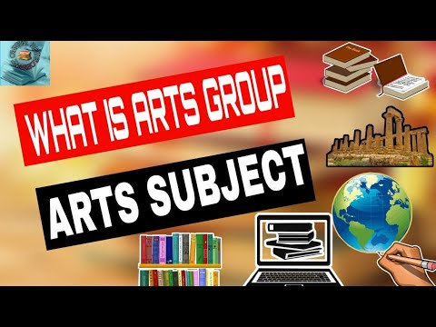

Our detailed guides provide you with the roadmap
you need to build a career and way to your success.
Accounting Jobs
Chareted Accountancy
Company Secretary
Lecturers
Senior Tax manager
An art group is a collective of artists who come together to share their ideas, techniques, and artwork. They may work together
on projects, hold exhibitions, or collaborate on other creative endeavors. Art groups can be found in many
different forms, from informal gatherings of friends to more formal organizations with a specific mission or purpose.
Some art groups focus on a particular medium or style, while others are more diverse and inclusive.
Art groups can be a great way for artists to connect with one another, learn new skills, and gain exposure for their work.

An art group or artist group, sometimes also an artist collective, describes itself as an open or fixed association
of artists to a group with a name. Founders and initiators of artist groups are mostly well-known artists,
around whom similarly thinking artists are grouped Many groups of artists had and still have a major and significant
influence on the various epochs of art history. In a broader sense,literary groups and group formations of musicians can also be referred to as artist groups